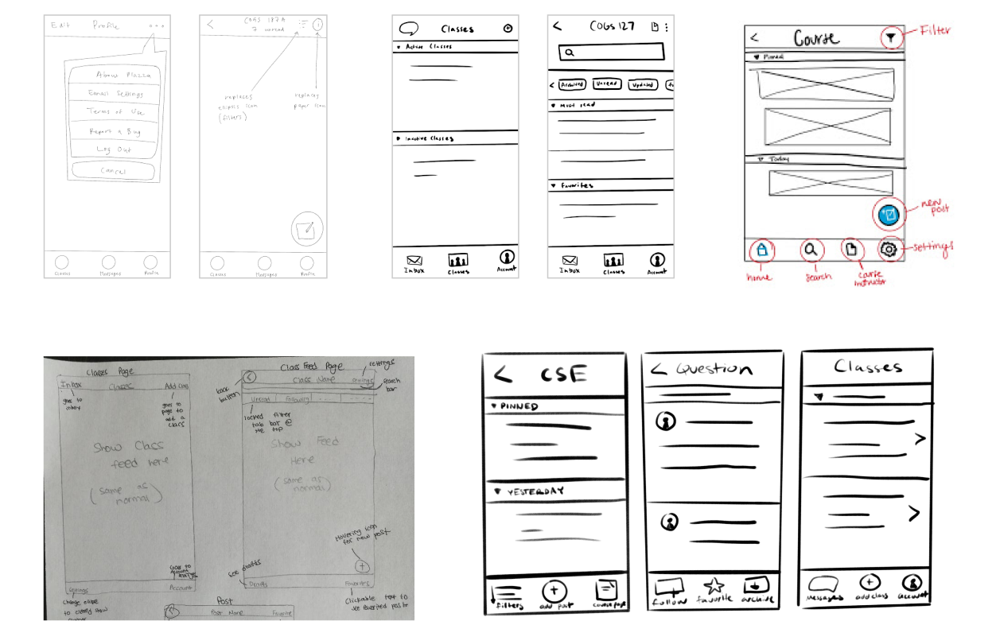

Piazza Redesign
Redesigning Piazza’s mobile app for easier navigation and intuitiveness.
Role: Team Lead, Designer
Timeline: 2 weeks
Scope: Project management, UX research, UI/UX Design
Background
Piazza is an online Q&A platform, widely used among colleges/universities, where students and instructors can discuss course-related work in an efficient manner. It’s a great way for students to get help from fellow students, TAs, and professors, and for finding course-related resources, announcements, and all the other good stuff. Basically, students love what Piazza can do, including me. But you might overhear students on campus venting their frustrations about certain elements of Piazza. A love-hate relationship!
In a Usability & IA (Information Architecture) course at UC San Diego, I worked with 4 other students to redesign Piazza’s mobile application. Our goal was to create a more intuitive user interface and facilitate a smoother experience for student users.
User Testing: Round One
To figure out what issues students were having, we conducted 4 user testing sessions. We recruited college students to be our users as they’re very familiar with Piazza and would help us identify the breakdowns.
Note: Since we only tested undergraduate students, and as students ourselves, the issues we identified may be catered towards this specific demographic’s needs/wants.
We asked our participants to roleplay using Piazza while completing a set of tasks consisting of commonly used features (e.g., “Comment on a post while remaining anonymous”).
These are some of the breakdowns we noticed while testing:
- Difficulty finding features because icons were unintuitive or unlabeled
- Certain words seemed to mean the same thing (“Favorite” vs. “Follow”)
- Some text falsely appear as links
- Difficulty finding saved drafts and favorited/followed posts
- Unable to delete posts or drafts
ALL of our testers actually found it difficult to find certain features because their respective icons were either unconventional or unrecognizable (in the context of “Recognition rather than recall” in Nielsen’s 10 Usability Heuristics).
Because of how prevalent this issue was compared to others, we ultimately decided to redesign this component (icon usage and placement) for our project. Our goal was to improve Piazza’s iconography to be more intuitive and recognizable so students can have a more seamless, stress-free experience on an app they use almost every day.
Our testers instintively began to tap the ellipsis icon when they couldn’t find a feature because they figured it might be there. Occasionally, this actually worked! This was interesting and kind of funny, but we don’t want our users to constantly be guessing on where things are.

Competitive Analysis
From here we asked, “How do we even create more intuitive and recognizable icons in the first place?”
To answer this question we looked at 3 different applications (Instagram, Canvas, and Slack) and identified the strengths and weaknesses of their icon usage and placement. We chose these applications because they all offered potential (and unique) solutions for how we can use icons in Piazza.
Some questions we kept in mind while analyzing these apps:
- What icons do they use?
- Where are the icons placed?
- Do the icons make it easier for users to navigate?
- Can we apply it to Piazza? How?
Sketches
Using the insight we gained from our competitive analyses, we made 5 sketches of how we can redesign Piazza’s icons. Each sketch integrated different types of solutions from our competitors.
High-Fidelity Prototypes
We created two high-fidelity prototypes, each incorporating DIFFERENT solutions that we brainstormed in our sketches. For example, the prototypes use different icon designs, placement, filtering methods, etc. We did this so that we could easily compare the different solutions when testing them on users in the next user testing round.


User Testing: Round Two
Finally, we got to test our two prototypes on 4 student participants who are familiar with Piazza.
We had two goals when conducting these user tests:
- Find out if our prototypes solve the issues in the first place. (i.e., Do users intuitively know what an icon will do? Do the bottom nav bar and new placement of icons speed up interactions?
- Find out which of the two prototypes solved the issues better. (ie., Which prototype is easier for our users? Because we only tested 4 participants, we decided to answer this question with qualitative data by asking our participants directly which prototype they like).


After this second round of testing, we found that 3 out of the 4 users preferred Prototype 2. These 3 users appreciated the consistent bottom nav bar, the recognizability of the new icons, the filter’s visibility of status, and the easy-to-understand floating action buttons. The user who preferred Prototype 1 liked how they felt confident pressing buttons because they were always laid out, although he conceded that Prototype 2 made navigation simpler.
Most of our users preferred consistency within an application, meaning the bottom nav bar elements should remain the same as conventionally practiced. Also, users generally have a less stressful experience when an app has easily recognizable elements, like intuitive icons that represent its function or labeled icons so that users don’t have to guess what the button does.
Reflections
Even though this was only a 2-week project, it was a valuable experience for me as a designer. I learned a great deal, but mostly, I learned just how useful competitive analyses can be! This was my first time doing one and I’m slightly upset I haven’t done it before.
This project has also helped me improve my technical skills in Figma. I’m learning to make my prototypes more interactive and the process is getting easier as I learn how to design faster, better, and just more efficiently.
Thank you for reading!
You can check out our interactive prototype here!